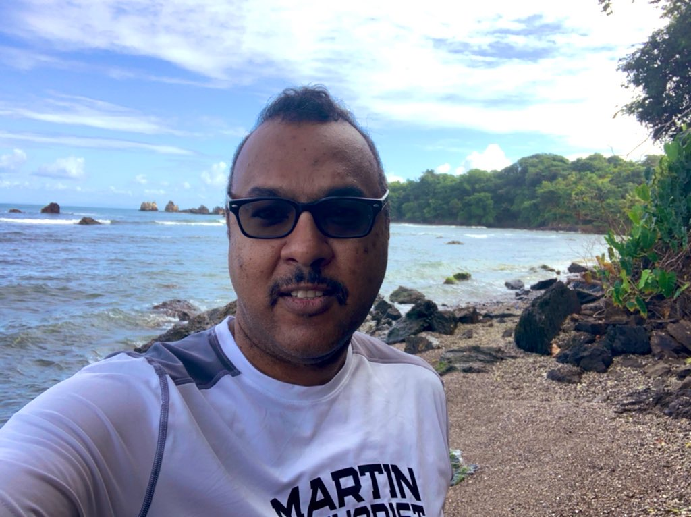
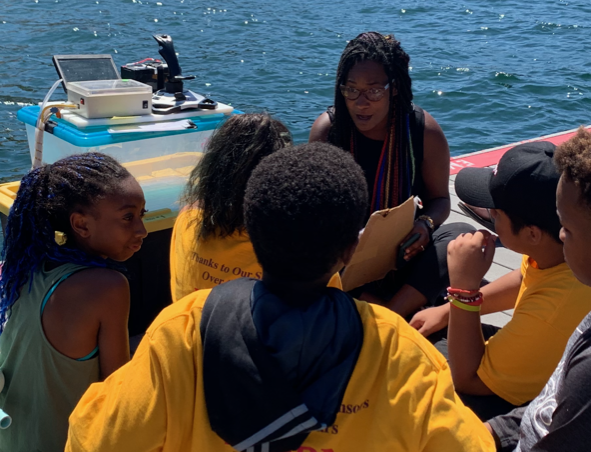

Profiles of
Black Marine Scientists
→ A-F ←
Salma Abdel-Raheem LinkedIn
Favorite Publication: Abdel-Raheem & Allen (2019) Developmental Consequences of Temperature and Salinity Stress in the Sand Dollar Dendraster excentricus.
Salma Abdel-Raheem is the Sightings Network Coordinator at The Whale Museum in Friday Harbor, WA.
In the paper above, Abdel-Raheem & Allen highlight the work of E.E. Just from the early 1900s, who was the only African American developmental biologist that Abdel-Raheem came across in her literature review. He was one of two researchers who described the potential for the developmental phenomena that Abdel-Raheem studied for her undergraduate honors thesis. Mentions of his work was virtually absent in the modern literature - something that likely would not have been the case if he were a white researcher.
“Tough times don’t last, tough people do.” Lately I’ve been feeling like the tough times are never-ending and so it’s a good reminder to persevere. Finding a community would definitely help make people tougher than the times."
Stanton Belford
Favorite Publication: Belford, S.G. et al. (2019). Biodiversity of Coral Reef Communities in Marginal Environments along the North-Eastern Coast of Trinidad, Southern Caribbean.
"Seek out your Success, when Others Fail to Give you a Chance."

Salome Buglass
Favorite Publications:
""It's so great to know you are there & love the big blue too! let's collaborate! Can't physically meet, swim and dive with you all once this pandemic is over!"
Dr. Emily Choy

Favorite Publication: Choy et al. (2019) Body condition impacts blood and muscle oxygen storage capacity of free-living beluga whales (Delphinapterus leucas).
Dr. Emily Choy is an Arctic marine biologist.
"Push forward & push further! Let your passion for science drive your curiosity to plumb the depths of knowledge and allow your imagination to soar! Our time is now!"
Nick Coleman
Favorite Black Scientist: Dr. Daniel Pauly
"I am so excited to interact with other #BlackinMarineScience participants and see all the black excellence on my timeline. Let's continue to change the tide and rise on some Maya Angelou vibes."
Tiffany Crawford

Favorite Publication: Diaz, R.J. & Solow, A. (1999) Ecological and economic consequences of hypoxia: Topic 2 Report for the Integrated Assessment on Hypoxia in the Gulf of Mexico
Tiffany Crawford grew up in Pikesville, Maryland, and developed a fascination with the ocean, and all things marine at an early age. Tiffany’s parents supported and strongly encouraged her pursuit of a career as a marine biologist, and in becoming the first “female Jacques Cousteau”. Tiffany earned a bachelor’s degree in marine science at Coastal Carolina University and a master’s degree in environmental policy at Drexel University. While at Coastal, Tiffany gained her open water certification for SCUBA diving. Tiffany’s education and research experience helped to refine her career goals and shift her focus from ocean exploration to ocean conservation. Tiffany officially began her career as an environmental scientist with the US Environmental Protection Agency (EPA) in 2002. During her 18 year career at EPA, Tiffany has worked in on a variety of water quality projects and regulations including the development and state adoption of numeric water quality standards for the Chesapeake Bay, state implementation of the Beaches Environmental Assessment and Coastal Health (BEACH) Act, and carried leading and key roles in high priority issues like the Numeric Nutrient Criteria Development for Florida Waters, and the 2015 Clean Water Rule. Seeking additional opportunities for growth and development, in 2019 Tiffany served as a Brookings LEGIS Fellow in the office of United States Senator Mazie K. Hirono, where her knowledge and skills were broadly applied at the congressional level. During this time, she also gained first-hand knowledge of congressional operations; including oversight of the executive branch. Now back at EPA, Tiffany serves as a water policy advisor on matters of agency and congressional oversight. Tiffany remains an avid SCUBA diver, and constantly seeks new opportunities to expand her reach as an ocean advocate.
“I am my ancestor’s wildest dream”
Dr. Dijanna Figueroa
Dijanna Figueroa has made a career of exploring the mysteries of the deep. Dr. Figueroa holds a bachelor’s degree in Marine Biology from UCLA and a PhD in Marina Science from UC Santa Barbara. She was featured in James Cameron’s documentary Aliens of the Deep, which follows Cameron and NASA scientists as they explore the some of the deepest parts of the ocean and learn about the unique life forms that inhabit those spaces. Her research on the thermal physiology of hydrothermal vent animals was featured in the film. Recently, Figueroa has become an advocate for STEAM education—adding art and design to the science, technology, engineering, and math equation. She’s spent more than two decades teaching STEAM to grades K–8, formerly served as global director of the Muse School National Geographic Society’s Green STEAM program and has advisory roles with many STEM/STEAM nonprofits. She was recently featured on MTV’s Women Crush Wednesdays Women in STEM series. She currently teaches middle school science at St. Matthew's Parish School and runs programs that teach students how to fly drones, scuba dive and build underwater robots. If that isn’t enough, Figueroa is the director of the Lucas Scholars STEM program, a community based social justice and equity program designed to engage young people in science, engineering, design, and art. She loves the ocean and is committed to making ocean science accessible to all people.
Ashlyn Ford
Favorite Publication: Maynard et al. (2015) Projections of climate conditions that increase coral disease susceptibility and pathogen abundance and virulence.
Ashlyn is a PhD student at UCLA studying Ecology and Evolutionary Biology. More specifically her research involves assessing the health of marine ecosystems and evaluating how infectious diseases are impacting different aspects of marine communities. She received her BS in Environmental Science at Florida Agricultural and Mechanical University in 2017.
"Few will have the greatness to bend history itself; but each of us can work to change a small portion of events, and in the total; of all those acts will be written the history of this generation.” -Robert Kennedy
- © 2020
- Design: HTML5 UP